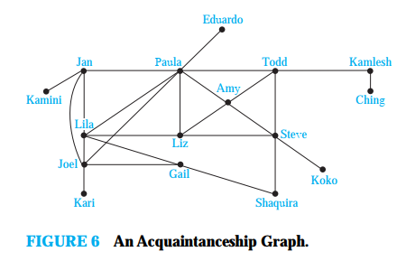

Многу проблеми, можат да се моделираат со патеки формирани со патување подолж ребрата од еден граф. На пример, проблемот на одредување дали е можно да се испрати порака помеѓу два компјутери може да се изучува со модел на граф. Проблемот на ефикасно собирање на ѓубре исто така.
Пат во граф
Неформално, пат е низа од јазли кој започнува во некој јазол во графот и минува од јазол до јазол преку ребрата.
Дефиниција 1
Нека `n` е ненегативен цел број а `G` е неоријентиран граф. Пат со должина `n` од `u` до `v` во `G` е низата од `n` ребра `e_1, . . . , e_n` од `G` за кои постои низата `x_0 = u`, `x_1, . . . , x_(n−1), x_n = v` од јазли така да `e_i` има за `i = 1, . . . , n`, крајна точка `x_(i−1)` и `x_i`. Кога графот е едноставен, патот се означува со низата на јазли `x_0, x_1, . . . , x_n` (бидејки низата на овие јазли уникатно го одредува патот). Патот е циклус ако почнува и завршува во ист јазол, односно ако `u = v`, и има должина поголема од нула. За циклусот се вели дека поминува низ јазлите `x_1, x_2, . . . , x_(n−1)` или ги поминува ребрата `e_1, e_2, . . . , e_n`. Патот или циклусот е едноставен ако не содржи исто ребро повеќе од еднаш.
Пример 1. Во едноставниот граф на сликата 1, `a, d, c, f , e` е едноставен пат со должина 4, бидејки `{a, d}`, `{d, c}`, `{c, f }`, и `{f, e}` се ребра. Од друга страна, `d`, `e`, `c`, `a` не е пат бидејки `{e, c}` не е ребро. Патот `b, c, f , e, b` е циклус со должина 4 бидејки `{b, c}`, `{c, f }`, `{f, e}`, и `{e, b}` се ребра, и овој пат почнува и завршува во `b`. Патот `a, b, e, d, a, b`, кој е со должина 5, не е едноставен бидејки го содржи реброто `{a, b}` двапати.
Дефиниција 2
Нека `n` е ненегативецел број а `G` е оријентиран граф. Пат со должина `n` од `u` до `v` во `G` е низата од `n` ребра `e_1, . . . , e_n` од `G` така да `e_1 = (x_0, x_1)`, `e_2 = (x_2, x_3), ... e_n (x_(n-1), x_n)` каде `x_0 = u`, `x_n = v`. Кога графот е едноставен, патот се означува со низата на јазли `x_0, x_1, . . . , x_n`. Патот е циклус ако почнува и завршува во ист јазол, односно ако `u = v`, и има должина поголема од нула. За циклусот се вели дека поминува низ јазлите `x_1, x_2, . . . , x_(n−1)` или ги поминува ребрата `e_1, e_2, . . . , e_n`. Патот или циклусот е едноставен ако не содржи исто ребро повеќе од еднаш.
Пример 2. Пат во граф на познанство Меѓу двајца луѓе постои пат ако постои ланец на луѓе којги поврзува ови двајца. На пример на долниот граф постои ланец од шест луѓе кои ги поврзуваат Kamini и Ching. Многу социлолози се убедени дека скоро секој пар на луѓе на планетата се поврзани преку ланец кој е составен од пет или помалку луѓе.
Сврзаност во неориентиран граф
Дефиниција 3
За неориентиран граф се вели дека е сврзан ако постои пат помеѓу секој пар на различни јазли на графот.
Пример 4. Grafot `G_1` на сликата 2 е сврзан, бидејки за секој пар на различни јазли постои пат помеѓу нив. Графот `G_2` не е сврзан ( на пример нема пат помеѓу a и d).
Понатаму ќе имама потреба од следната теорема.
Теорема 1
Постои едноставен пат помеѓу секој различен пар на јазли кај сврзаниот неориентиран граф.
Доказ: Пат меѓу било кои две темиња `u` и `v` мора да постои, нека е тоа `x_0, x_1,…, x_n`. Нека тоа е најмалиот пат меѓу тие темиња. Тој мора да е прост. Ако не е прост некое теме се повторува двапати, пример `x_i=x_j`. Но делот од `x_i` до `x_j` може да се отстрани и тоа што ќе остане е пак пат од `u` до `v` и тоа со помала должина. Значи добивме контрадикција, што значи дека меѓу секој пар јазли во сврзан граф постои едноставен пат.
Сврзани компоненти
Сврзана компонента на графот `G` e сврзан подграф од `G` кој не е пограф на друг сврзан подграф од `G`. Ова значи дека свраната компонента на графот `G` е максимален сврзан подграф. Несврзан граф има две или повеќе компоненти кои се неповрзани и графот `G` е нивна унија.
Засек
Да претпоставиме дека еден сврзан граф претставува компјутерска мрежа. Тоа сначи дека секој пар на компјутери во мрежата може да комуницираат. Од интерест е сознанието и колку е поуздана мрежата. На пример, дали е можно сите компјутери да комуницираат ако испадне некој рутер или линија? За да се одговори на ова и слични прашања ќе развиеме нов концепт.
Понекогаш отстранувањето од графот на јазол или сите инцидентни ребра дава како резултат подграф со повеќе сврзани компоненти. Вакви јазли се викаат јазли на засек. Отстранувањето на јазел на засек од сврзан граф дава подграф кој не е сврзан. Аналогно на ова, реброто со чије отстранување се добива граф со повеќе сврзани компоненти се вика ребро на засек или мост. Кај графот кој претставува компјутерска мрежа јазол на засек и ребро на засек претставуваат основен рутер и основна комуникациска линија која кои не смеат да дефектираат за да може сите компјутери да комуницираат.
Пример 7. Да се одеди јазолот на засек и реброто на засек за графот `G_1' даден на сликата 4.
Решение: Јазли на засек се b, c, и e. Отстранувањето на еден од овие јазли ( и неговите припратни ребра) го прават графот несврзан. Ребра на засек се `{a, b}` и `{c, e}`. Отстранување на едно од овие ребра го прават графот несврзан.
Сврзаност во ориентиран граф
Постојат две нотации засврзаност на ориентирани графови, во зависнозт дали ориентацијата на ребрата се зема во обзир.
Дефиниција 4
Ориентиран граф е силно сврзан ако постои пат од `a` до `b` и од `b` до `a` при што `a` и `b` се јазли од графот.
Дефиниција 5
Ориентиран граф е слабо сврзан ако постои пат помеѓу секој пар на јазли во соодветниот неориентиран граф.
Пример 10. Дали ориентираните графови `G` и `H`, прикажани на сликата 5 се силно врзани? Дали се слабо врзани?
Решение: Графот `G` е силно сврзан бидејки постои пат помеѓу секој пар на јазли во овој ориентиран граф. Исто така графот `G` е и слабо врзан. Графот `H` не е силно свран. Не постои ориентиран пат од `a` до `b`. Но графот `H` е слабо сврзан бидејки постои пат помеѓу било кои два јазли во соодветниот неориентиран граф.
Силно сврзани компоненти или силни компоненти
Подграфови од ориентиран граф `G` кои се силно сврзани но не се содржни во максимално силно поврзаниот субграф.
---------- EOP ----------